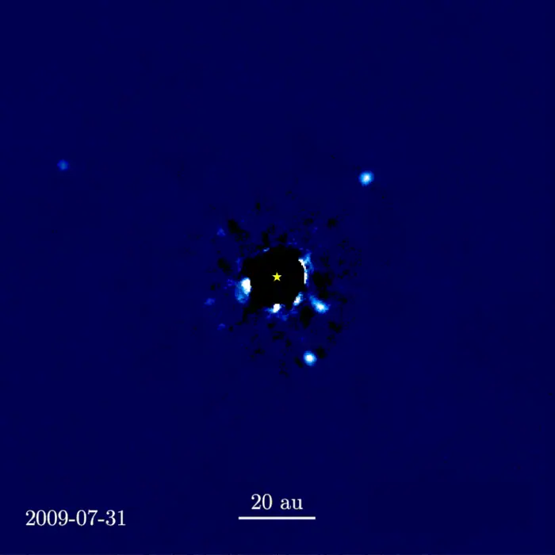

Science · Mastodon #science · Sep 24, 2026
Scientists Detect Radio Signals from an Exoplanet for the First Time in History
Scientists Detect Radio Signals from an Exoplanet : Mastodon #science

Introduction
Scientists Detect Radio Signals from an Exoplanet : Mastodon #science
Background & context (from research brief)
# Scientists Detect Radio Signals from an Exoplanet for the First Time in History
Why it matters
The development was reported by Mastodon #science on Sep 24, 2026 as part of today's news cycle.
Source & further reading
This page aggregates the headline and context; the full original report is linked in the source panel below. Topic keywords: scientists, detect, radio, signals, from.